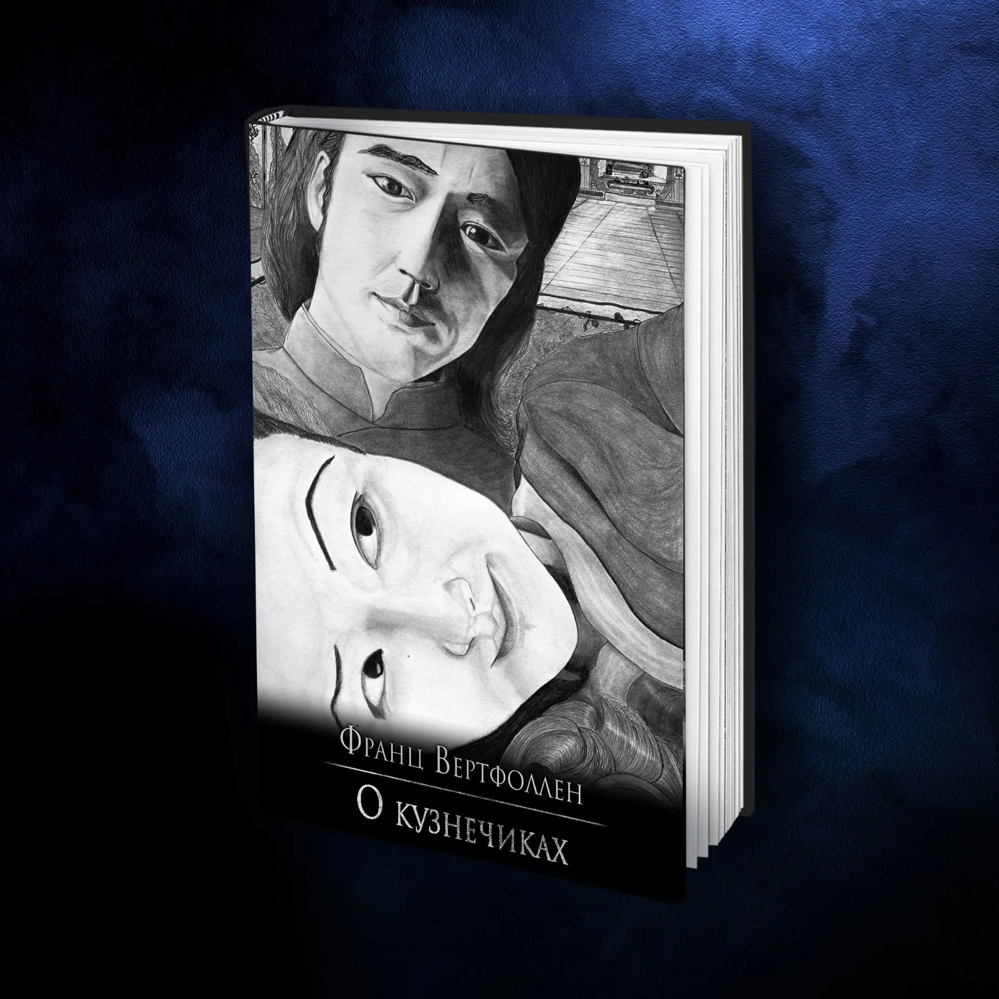

О Кузнечиках
Это сборник ранних рассказов и стихов Франца Вертфоллена.
550₽
3,300 тенге
оплатить в другой валютеО сюжете
Это сборник ранних рассказов и стихов.
Если вы не знаете с чего начать знакомство с вселенными Франца
Вертфоллена, это отличный вариант.
В историях нет героев вселенных, но это возможность заглянуть в
голову г-на Вертфоллена в юности.
Истории, которые очень нужны каждому в период взросления и в моменты, когда вам кажется, что вы не справляетесь со своей жизнью.
Они переплетаются с японскими мифами и известными сказками из детства.
Подробнее о трёх историях из книги ниже.
Как читать:
-

На электронной
читалке -
Шелестеть
страницами -
Смотреть видео-
спектакль
Как читать:
-
На электронной
читалке -
Шелестеть
страницами -
Смотреть видео-
спектакль
О сюжете
Это сборник ранних рассказов и стихов.
Если вы не знаете с чего начать знакомство с вселенными Франца
Вертфоллена,
это отличный вариант. В историях нет героев вселенных,
но это возможность заглянуть в голову г-на Вертфоллена в юности.
Истории, которые очень нужны каждому в период взросления и в моменты, когда вам кажется, что вы не справляетесь со своей жизнью.
Они переплетаются с японскими мифами и известными сказками из детства.
Подробнее о трёх историях из книги ниже.